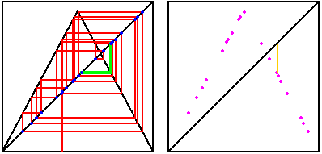

| A return map plot of a sequence x0, x1, x2, x3, ... is a plot of the points |
| Here is an illustration of the return using graphical iteration, and an explanation of the parts of this diagram. |
|  |
| Click the picture to repeat. |
To illustrate the sorts of things we can learn from a return map, here are some time series (left) and return maps (right).
| uniform random | chaotic tent map | average of chaotic tent maps |
Return to Background.